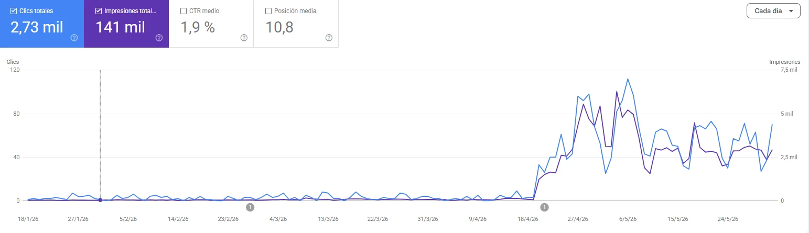

Cómo un distribuidor internacional de hardware pasó de ser invisible en Google a miles de visitas orgánicas al mes


1 min de lectura
Distribuidor internacional de hardware B2B
Un distribuidor internacional de hardware tenía miles de productos publicados y casi ninguna presencia en Google. Los compradores que buscaban por Part Number, SKU o UPC — la forma real en que se compra hardware B2B — no encontraban nada. En lugar de rehacer una plataforma Laravel que funcionaba, le construimos un módulo SEO a la medida. En semanas, más de 8,000 páginas comenzaron a indexarse correctamente y el tráfico orgánico pasó de casi nulo a miles de visitas mensuales.
El Cliente
Distribuidor internacional de hardware B2B
Anonimizado · NDA- Distribución de hardware B2B
- Estados Unidos · Perú · Chile · expansión a Colombia y Dubái
Este cliente es un distribuidor internacional de hardware con operaciones en Estados Unidos, Perú y Chile, y expansión activa hacia Colombia y Dubái. Su plataforma comercial — desarrollada en Laravel por un tercero — administra miles de productos identificados por Part Number, SKU y UPC.
Diagnóstico
Qué estaba fallando
- [01]
Miles de productos publicados pero prácticamente ausentes de Google
- [02]
Los productos no se estaban indexando correctamente
- [03]
Las búsquedas por Part Number, SKU o UPC no generaban tráfico — justo como busca el comprador B2B
- [04]
La plataforma carecía por completo de fundamentos técnicos de SEO
- [05]
El sistema fue desarrollado por un tercero y debía seguir operando intacto
- [06]
Competir orgánicamente en un mercado internacional de hardware ya establecido
Impacto en el negocio
Un catálogo invisible en buscadores solo le vende a quien ya conoce la empresa. Para un distribuidor en expansión, ese techo se coloca exactamente donde debería estar entrando la demanda nueva.
Por qué fallaron los intentos anteriores
La plataforma había sido desarrollada por un tercero sin fundamentos de SEO en su arquitectura. El objetivo era explícitamente incrementar la visibilidad orgánica SIN reemplazar el sistema existente.
03
Nuestro Enfoque
Cómo lo resolvimos
01
Auditoría técnica completa
Empezamos auditando el proyecto existente en lugar de proponer rehacerlo. Analizamos la arquitectura Laravel, cómo se generaban las rutas de producto, qué podían rastrear e indexar realmente los buscadores y dónde estaban las brechas estructurales. La auditoría volvió concreto el diagnóstico: no era un problema de contenido, era un problema de fundamentos técnicos.
Entregables
- Auditoría técnica SEO completa de la plataforma Laravel
- Análisis de indexación y rastreabilidad
- Lista priorizada de brechas mapeada a la arquitectura existente
02
Diseño del módulo SEO para Laravel
Diseñamos un módulo SEO completamente personalizado para Laravel, construido para respetar la arquitectura existente. La restricción definió el diseño: cada mejora tenía que encajar en un sistema en producción sin afectar la operación diaria del negocio ni exigir reingeniería de la plataforma del tercero.
Entregables
- Arquitectura del módulo SEO a la medida para Laravel
- Estrategia de URLs por nombre de producto, Part Number, SKU y UPC
- Modelo de datos estructurados y metadata
03
Implementación
Implementamos el módulo sobre la plataforma en vivo: XML sitemaps, URLs amigables, canonical tags, metadata dinámica, Schema Markup, Open Graph y mejoras de indexación — todo conectado a los datos de producto existentes, para que miles de páginas los heredaran automáticamente en lugar de editarse una por una.
Entregables
- XML sitemaps y mejoras de indexación
- URLs amigables por nombre de producto, Part Number, SKU y UPC
- Canonical tags, metadata dinámica, Schema Markup y Open Graph
04
Medición y siguientes fases
Con Google Search Console como fuente de verdad, dimos seguimiento a la indexación conforme las páginas entraban al índice y el tráfico orgánico las seguía. Los resultados llegaron en semanas, y el cliente extendió la relación a nuevas fases enfocadas en SEO de contenidos y posicionamiento B2B.
Entregables
- Monitoreo en Search Console de indexación y desempeño orgánico
- Hoja de ruta para las fases de SEO de contenidos y posicionamiento B2B
Stack Tecnológico
Herramientas y tecnologías
Laravel
Framework
PHP
Lenguaje
Schema.org
Datos estructurados
Open Graph
Datos estructurados
XML Sitemaps
SEO técnico
Google Search Console
Medición
Resultados
Resultados cuantificados
8,000+
Páginas indexadas
indexadas correctamente tras la implementación
Miles
Visitas orgánicas al mes
antes Prácticamente nulas
alcanzadas en cuestión de semanas
Semanas
Primeros resultados
no el horizonte habitual de varios meses
Cero
Plataformas rehechas
el sistema Laravel existente siguió en producción

Aprendizajes Clave
Qué aprendimos
01
Ser invisible en Google suele ser un problema de arquitectura, no de contenido
El distribuidor ya tenía miles de productos publicados. Al catálogo no le faltaba nada — le faltaba el fundamento técnico que permite a un buscador rastrearlo, entenderlo e indexarlo. Agregar más contenido no habría movido una sola posición.
Útil cuando: Cualquier plataforma de ecommerce o catálogo con inventario amplio y tráfico orgánico desproporcionadamente bajo.
02
El comprador B2B busca por identificador, no por adjetivo
En distribución de hardware, el comprador busca un Part Number, un SKU o un UPC — no una descripción de marketing. Construir URLs dedicadas para cada identificador alineó la plataforma con cómo ocurre realmente la compra en este mercado.
Útil cuando: Distribuidores, proveedores industriales y cualquier catálogo B2B con identificadores estandarizados.
03
Se puede modernizar la capa SEO sin reemplazar la plataforma
El sistema fue construido por un tercero y sostenía el negocio. Le construimos la capacidad SEO dentro de esa arquitectura en vez de alrededor de ella — sin rehacer, sin migrar y sin interrumpir la operación.
Útil cuando: Negocios operando sobre plataformas heredadas o de terceros que funcionan y no se pueden pausar.
04
Los arreglos estructurales se multiplican en todo el catálogo a la vez
Como las mejoras quedaron conectadas al modelo de datos de producto, miles de páginas las heredaron simultáneamente. Por eso los resultados aparecieron en semanas y no en el horizonte de varios meses típico del SEO de contenidos.
Útil cuando: Catálogos grandes donde optimizar página por página es económicamente imposible.
Preguntas frecuentes
Preguntas frecuentes
01¿Se puede mejorar el SEO de una plataforma Laravel hecha por otro proveedor?
Sí. En este proyecto la plataforma Laravel fue desarrollada por un tercero y debía seguir operando intacta. Auditamos la arquitectura existente y construimos un módulo SEO a la medida que encajó dentro de ella — sitemaps, URLs amigables, canonical tags, metadata dinámica, Schema Markup y Open Graph — sin reemplazar el sistema ni interrumpir la operación diaria.
02¿Por qué miles de productos publicados siguen sin generar tráfico orgánico?
Porque publicar no es indexar. Si la plataforma carece de fundamentos técnicos de SEO — XML sitemaps, URLs amigables rastreables, canonical tags, metadata dinámica y datos estructurados — los buscadores no pueden descubrir, entender ni indexar el catálogo correctamente. Los productos existen para quien ya tiene la URL, y prácticamente no existen para un buscador.
03¿Cómo se logra que un catálogo B2B posicione por Part Number, SKU y UPC?
Dándole a cada identificador su propia URL rastreable y canónica, y describiendo el producto con datos estructurados. El comprador B2B busca hardware por identificador exacto y no por frases descriptivas, así que la plataforma debe exponer una página dedicada e indexable para cada uno — que es justo lo que implementó el módulo SEO que le construimos.
04¿Cuánto tarda el SEO técnico en dar resultados en un catálogo de ecommerce?
Cuando el problema es estructural y no editorial, los resultados pueden llegar rápido. El distribuidor vio más de 8,000 páginas comenzar a indexarse y el tráfico orgánico alcanzar miles de visitas mensuales en cuestión de semanas, porque los arreglos quedaron conectados al modelo de datos y se aplicaron a todo el catálogo de forma simultánea en lugar de página por página.
05¿Conviene rehacer la plataforma o agregarle SEO técnico?
Depende de si la plataforma funciona. El sistema Laravel del distribuidor cumplía su función como herramienta de negocio — la brecha era exclusivamente de capacidad SEO. Rehacerlo habría sumado costo, riesgo de migración y tiempo fuera de línea para resolver algo que la ingeniería sobre la arquitectura existente resolvió sin nada de eso. Rehaz cuando la plataforma es la restricción; construye dentro cuando la plataforma está bien y lo que falta es la capacidad.
Servicios entregados
Las áreas de práctica detrás de este trabajo

Escribamos el tuyo.
Agenda una llamada→- 17Países
- 1,000+Proyectos
- 15+Años
— WeEvolveIT, Monterrey · Dubai · 2026